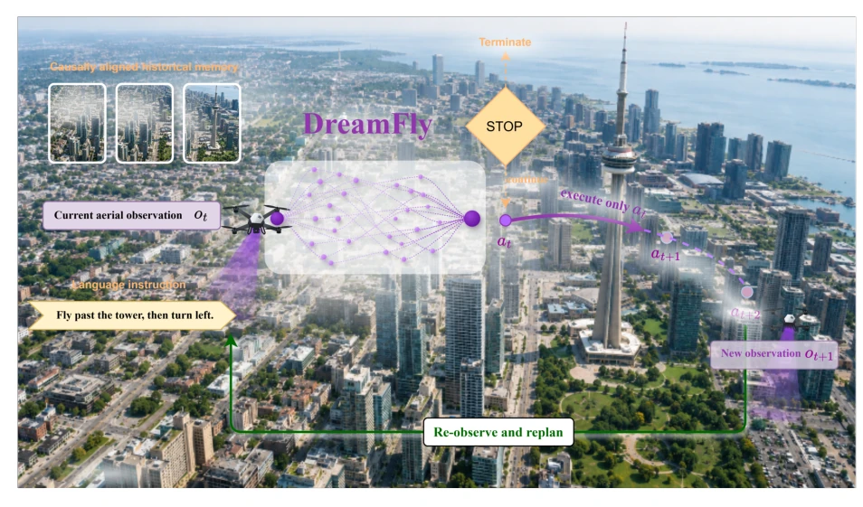
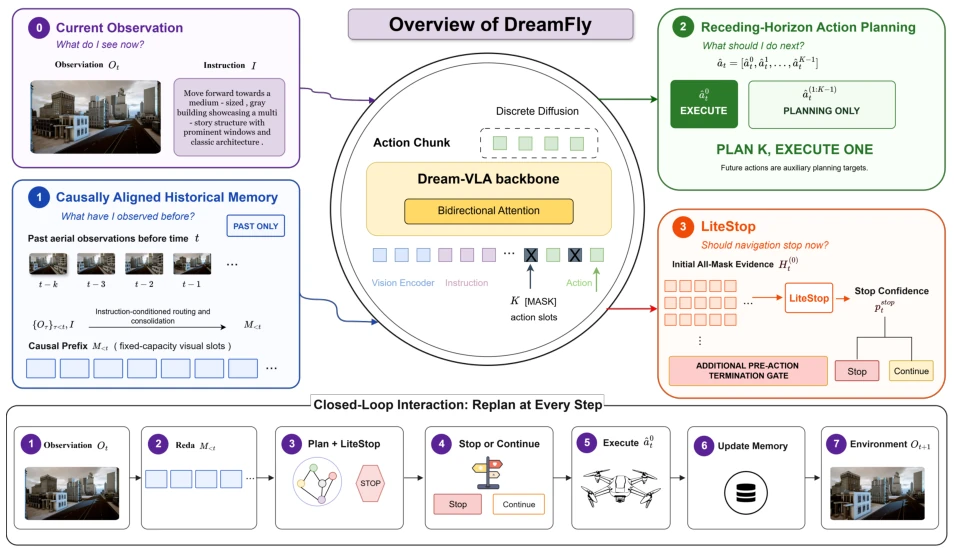
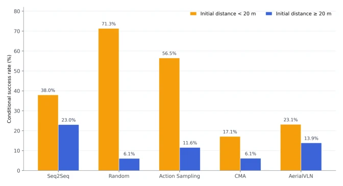
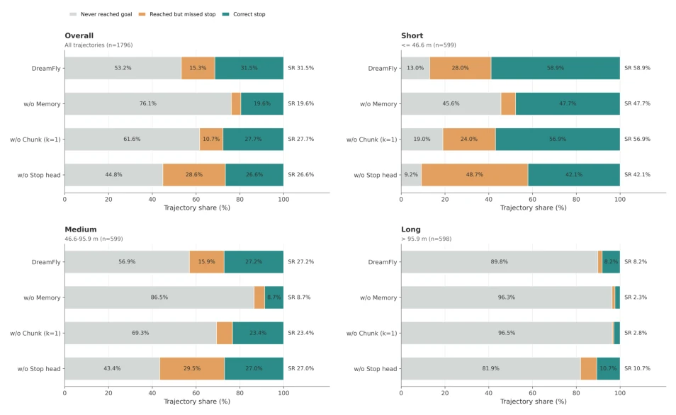
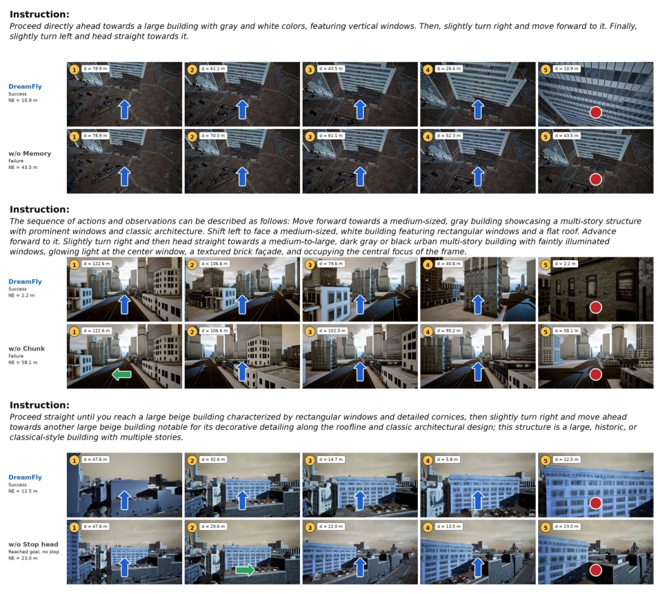

这篇论文给无人机导航搞了个“因果记忆”和“扩散规划”，听起来挺高大上。DreamFly 试图解决无人机在三维空间里“迷路”和“瞎停”的问题。它把历史记忆搞成了单向通道，防止模型偷看未来，这点挺良心，毕竟很多模型训练时作弊，部署时才发现。扩散策略用来预测动作块，然后只执行一步再重规划，算是把“走一步看一步”玩明白了，避免了开环执行的僵硬。LiteStop 单独负责停车，避免了动作生成和终止的耦合，算是个巧妙的工程 trick，毕竟停车错了就 game over 了。不过，毕竟基于 Dream-VLA，计算开销可能不小，而且扩散生成在实时性上依然是个问号，真机上跑得动吗？总的来说，在 OpenFly 上刷榜了，SR 和 SPL 都领先，但能不能上真机还得看推理速度，别成了实验室里的“慢动作回放”。
This paper proposes "causal memory" and "diffusion planning" for drone navigation, which sounds quite sophisticated. DreamFly attempts to solve the problem of drones getting "lost" and "stopping blindly" in 3D space. It converts historical memory into a one-way channel to prevent the model from peeking into the future, which is quite thoughtful, considering many models cheat during training and only discover it upon deployment. The diffusion strategy is used to predict action blocks, then executes only one step before replanning, effectively mastering the "look ahead one step" approach, avoiding the rigidity of open-loop execution. LiteStop is solely responsible for stopping, avoiding the coupling of action generation and termination, which counts as a clever engineering trick, after all, if stopping is wrong, it's game over. However, since it is based on Dream-VLA, the computational overhead might be significant, and diffusion generation remains a question mark regarding real-time performance; can it run on real hardware? Overall, it topped the leaderboard on OpenFly, with SR and SPL leading, but whether it can be deployed on real hardware depends on inference speed, don't let it become a "slow-motion replay" in the lab.
Aerial Visual Language Navigation (Aerial VLN) is much harder than ground-based; drones must manage horizontal, vertical, and viewpoint, and the field of view is also limited [2]. Existing VLA models [9, 10] cannot be directly applied because single-step action prediction lookahead is insufficient, and implicit termination is unreliable [18]. Previous historical memory methods are either too redundant or prone to leaking future information (causal violation). For example, Recurrent VLN-BERT [6] or HAMT [7] although using history, do not have explicit temporal boundaries and are prone to introducing bias in closed loops. We need a closed-loop system that can remember the past, plan for the future, and accurately judge when to stop. Especially since drone environments are complex, local decision errors accumulate, so historical modeling must have temporal boundaries, action prediction must be forward-looking but replannable, and termination must be explicit and independent.
The core is the DreamFly framework, based on Dream-VLA [12]. 1. **Causal Aligned Historical Memory**: `M<t` contains only observations before the current step, adopting a read-before-write protocol to prevent information leakage. Using CLIPSeg and OWLv2 to extract candidates, fused via gated cross-attention, retaining only valid historical evidence. 2. **Replanning Diffusion Planning**: Predict K-step action blocks, but execute only the first step, then replan. Utilizing a bidirectional diffusion backbone, supervised by valid-prefix, emphasizing executable actions. 3. **LiteStop**: A decoupled termination module, estimating stop probability from initial fully masked logits, trained separately, without modifying the action policy. The overall flow is observation->memory->planning->termination judgment->execution->update memory. This design ensures temporal consistency, avoids future information contamination, while retaining closed-loop feedback.
实验Experiments
在 OpenFly [4] 基准测试，包含渲染和真实场景。指标是 SR 和 SPL。Seen/Unseen 都测了。结果 SR 达到 32.04%/29.46%，SPL 28.22%/23.54%，比所有对比方法都好，导航误差最低。消融实验（Fig 5）显示三个组件都有贡献，尤其是历史记忆和规划。定性比较（Fig 6）展示了记忆和规划的效果，能更好处理长距离。Fig 4 显示在远距离下优势更明显，说明规划能力提升了鲁棒性。整体证明了联合建模历史、动作结构和终止的有效性。
Tested on the OpenFly [4] benchmark, including rendered and real scenes. Metrics are SR and SPL. Seen/Unseen were both tested. Results SR reached 32.04%/29.46%, SPL 28.22%/23.54%, better than all comparison methods, with the lowest navigation error. Ablation experiments (Fig 5) show all three components contribute, especially historical memory and planning. Qualitative comparison (Fig 6) demonstrates the effects of memory and planning, handling long distances better. Fig 4 shows advantages are more obvious at long distances, indicating planning capability improved robustness. Overall proves the effectiveness of joint modeling of history, action structure, and termination.
其他图片Other Figures

Figure 1: DreamFly at a Glance. At decision step t, DreamFly conditions on the language instruc- tion, current aerial observation, and a historical memory containing only observations acquired before step t to generate a K-step action plan. DreamFly executes only the first action, acquires a new observation, and replans at the next decision step, while LiteStop separately estimates the probability of termination. Dashed actions denote planned future actions that are not executed at the current decision step.

Figure 2: Overview of the proposed DreamFly framework. At each decision step, DreamFly con- ditions action prediction on the current observation, navigation instruction, and a causally aligned memory constructed from prior observations. The Dream-VLA backbone predicts a K-step action chunk through bidirectional diffusion, while LiteStop estimates termination from the initial all-mask action logits. If termination is not triggered, only the first action in the predicted chunk is executed before replanning from the next observation. Information derived from the current observation can enter the historical memory only for subsequent decisions.

Figure 4: Conditional success rates of baseline methods under different initial goal distances. Tra- jectories are partitioned according to whether the initial goal distance is within the 20 m success radius. The stochastic baselines exhibit substantially higher success rates when initialized inside the success region, highlighting the strong influence of favorable initial configurations on their non-zero overall success rates.

Figure 5: Component-wise analysis across different initial 3D Euclidean distance(s) to the goal. Test trajectories are partitioned into three groups according to their initial shortest-path distances to examine how the contribution of each DreamFly component varies with navigation distance.

Figure 6: Qualitative comparison between DreamFly and its ablated variants on representative OpenFly trajectories. The three examples illustrate the effects of historical memory, receding- horizon action planning, and LiteStop, respectively. Numbers indicate the distance to the navigation goal.